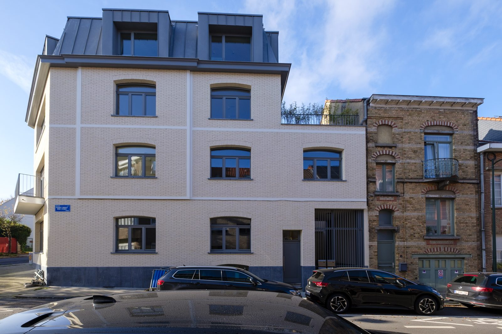
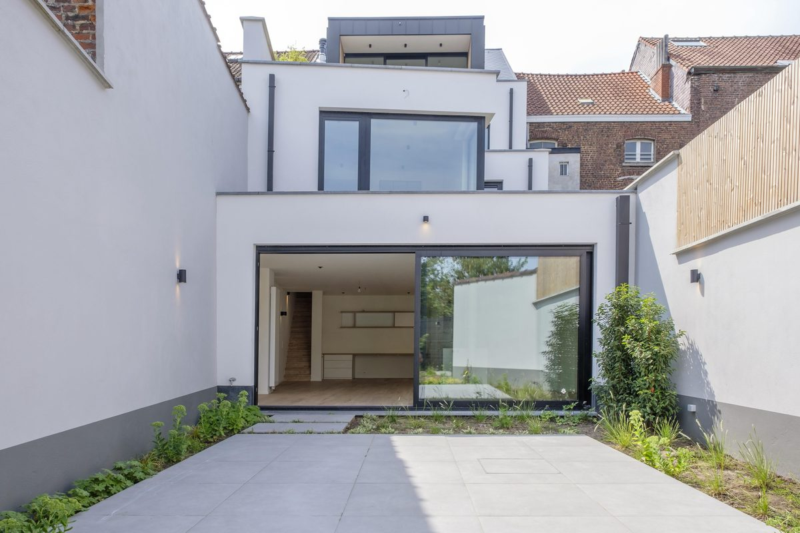
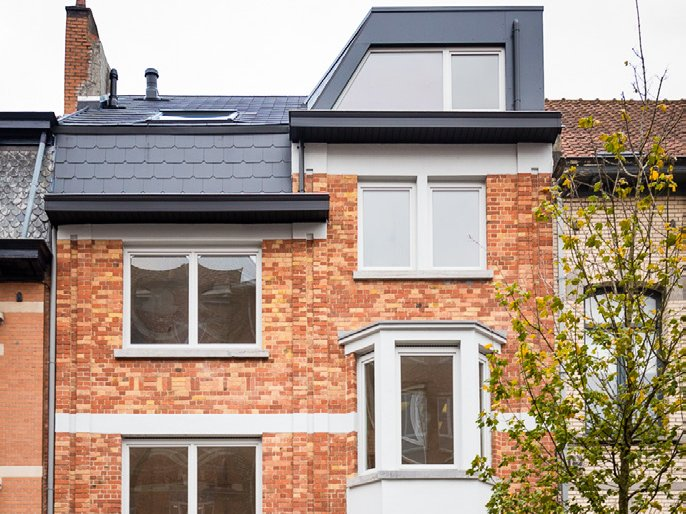
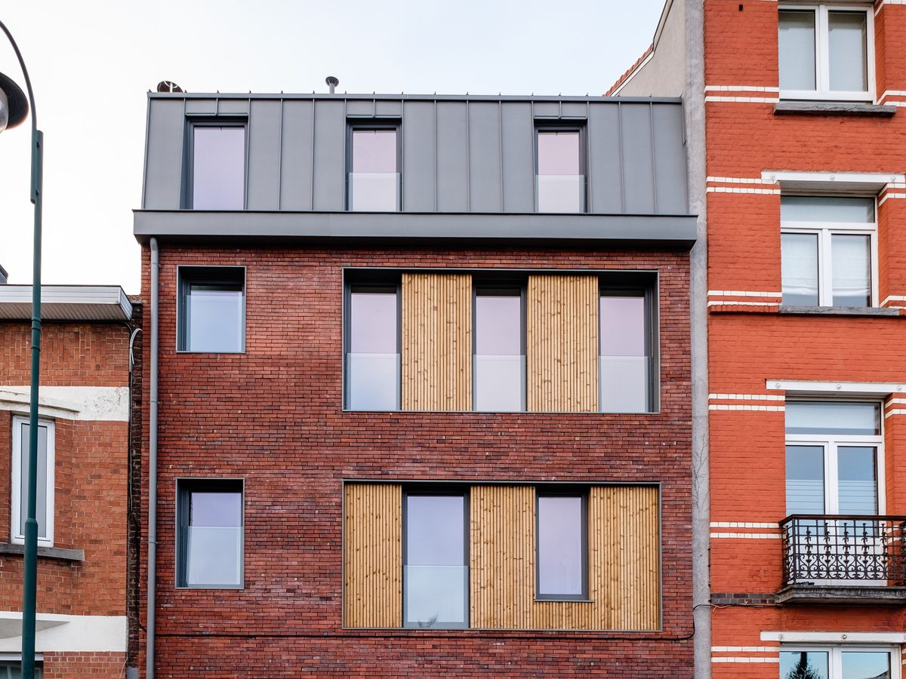
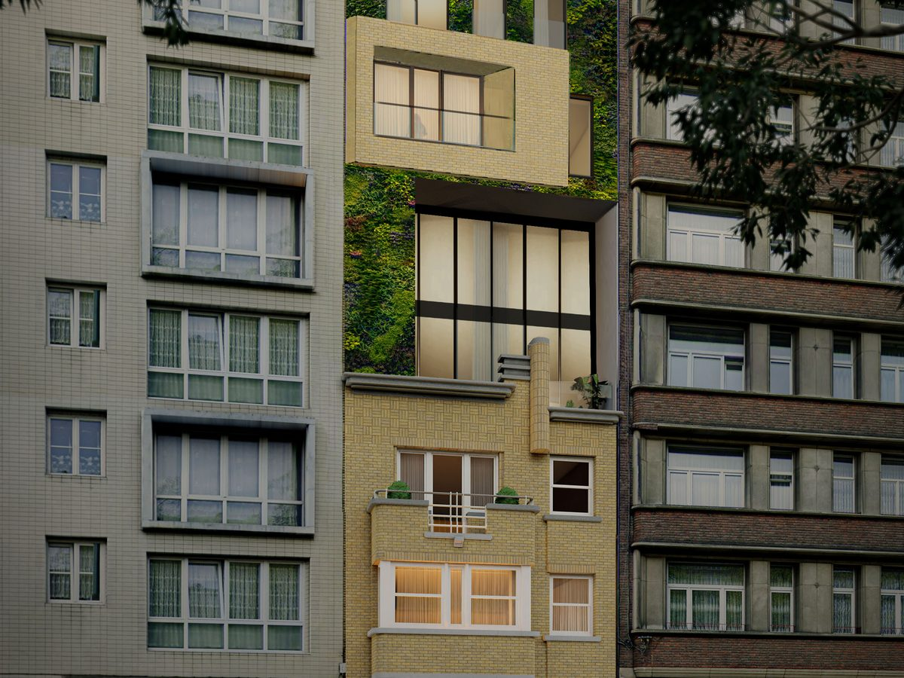
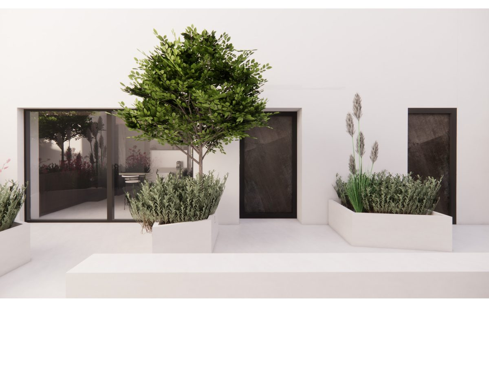

Since 2015, Broperties has been transforming, extending and building places to live across the Brussels-Capital Region. Every project is carried out with renowned contractors, architects and designers — properties built to last, with attention to detail.

A building of three apartments: extensive renovation and new construction, completed in 2026. Two apartments still available.

Conversion and extension of an existing building into a shop and three homes, including a four-bedroom duplex with garden.
View the project →
A complete, high-end renovation of a magnificent house with a 7.5-metre façade, converted into three homes — including a three-bedroom duplex — with a landscaped garden, on a quiet street facing the Altitude Cent square.
View the project →
Construction of two duplexes, a stone's throw from Altitude Cent, on the border with Uccle.
View the project →Two new projects are in preparation in Schaerbeek.

Extension of a Paquebot-style family house: three additional floors, for a total of five homes. (Architect's impression.)
View the project →
Conversion of a former garage into two street-side duplexes and two duplexes to the rear, with a green space reintroduced between the two buildings. (Architect's impression.)
View the project →Interested in a future project? Leave us your details.
Two apartments are still available on rue des Pierres Rouges in Watermael-Boitsfort.
Discover the apartments